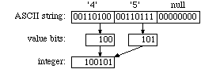

This tutorial displays some practical uses of the shift operator. It is often important to change the format of data, for communications, storage, or presentation. These format changes often involve shift, AND and OR operations arranged so as to move bits within one set of words into another. This particular program takes a string of octal digits, and converts them into an integer value. 
The conversion process is illustrated in the example to the right. The original string "45", is to be interpreted as 458, equivalent to 3710. Conveniently, the ASCII code for the digit '4' ends with the bits 100, which is the binary code for four. Likewise, the ASCII '5' ends in 101, which encodes five; this correspondence holds for all ASCII digits. When the two bit patterns are assembled together, the result, 1001012, is the bit pattern for 3710.
Note that the program really converts from octal to binary. Once the data is in native binary format, the C++ output library makes the binary-decimal conversion. The main program t5m.cpp is unremarkable; but t5.s merits some explanation:
21: The immediate argument #7 has the binary pattern 000001112, i.e., the rightmost three bits of the word. ANDing this pattern with the character in r2 clears all but the rightmost three bits.
22: A lot happens in this one instruction! Beginning on the right, the shift operation lsl#3 makes way for new bits by moving the previous bits of r1 three places to the right. This is equivalent to multiplying r5 by 8, but the shift is faster and, to experienced coders, more obvious. The shifted operand is then OR'd with the three-bit pattern in r2.
Make and run this program, and verify that it does indeed convert 458 to 3710, 1008 to 6410, etc. Then, use gdb to trace the operation of the program. Stepping through the loop, you should be able to watch the bits transferred from the string to r2, then ORed into r1. Warning: be sure to continue before you execute line 29. When the address in r0 is replaced by the return value, string display is no longer valid. The attempt to display a string from an arbitrary address (e.g. 37) can crash gdb.
Self-Test
Assignment
Joke
Why do so many programmers confuse Halloween with Christmas?
Because 31Oct = 25Dec